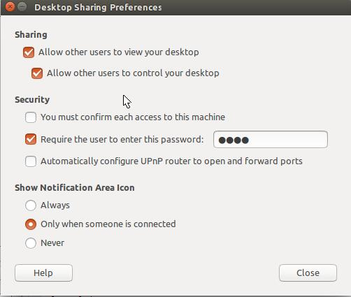

Windows（xrdp+vnc）远程连接Ubuntu系统
一般情况下，很多服务器会安装ubuntu系统，而个人电脑常安装windows系统。那么，在windows系统中，如何通过远程桌面连接软件，远程连接ubuntu系统呢？具体可以参考以下步骤：
（1）Ubuntu系统设置：安装xrdp，vnc4server
安装xrdp：sudo apt-get install xrdp
安装vnc4server：sudo apt-get install vnc4server
（2）Ubuntu设置允许远程连接和控制
具体参考下图：

（3）设置xrdp
echo "gnome-session --session=gnome-classic" > ~/.xsession
该命令的作用是由于安装了gnome桌面，ubuntu12.04中同时存在unity、GNOME多个桌面管理器，需要启动的时候指定一个，不然即使远程登录验证成功以后，也只是背景。
（4）重启 xrdp
通过执行命令重启xrdp: sudo /etc/init.d/xrdp restart
（5）可能遇到的问题
A.连接错误
started connecting
connecting to 127.0.0.1 5900
tcp connected
security level is 0 (1 = none, 2 = standard)
error - problem connecting
运行以下命令，并重启计算机：gsettings set org.gnome.Vino require-encryption false
参考自以下连接：
http://www.linuxidc.com/Linux/2015-05/117835.htm